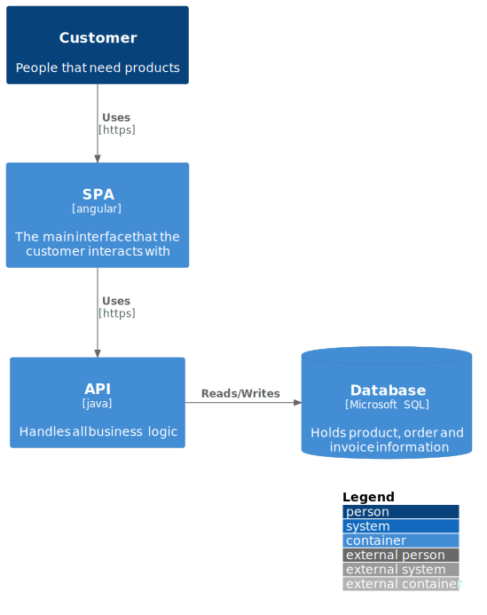

Asciidoc Fragments Tab A Tab B Tab C Contents of tab A. Contents of tab B. Contents of tab C. Contains more than one block. Antora https://intellij-asciidoc-plugin.ahus1.de/docs/users-guide/features/advanced/antora.html Other Solutions Data Center Benchmarks DCPerf https://www.infoq.com/news/2024/08/meta-dcperf-benchmark-suite/ FleetBench https://github.com/google/fleetbench Diagrams Mermaid  C4 PlantUML 